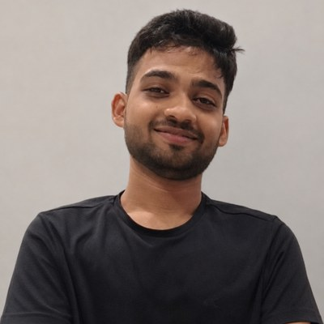
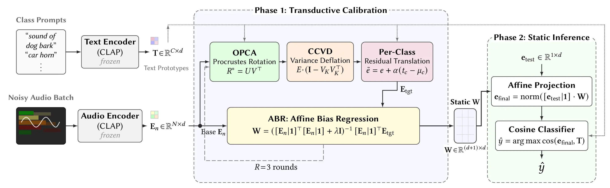

Undergraduate Researcher · Data Science & Engineering · IISER Bhopal
I am a third-year undergraduate student at the Indian Institute of Science Education and Research (IISER) Bhopal, where I work with the VisDom Lab advised by Dr. Vinod Kumar Kurmi and Dr. Rini Smita Thakur. I am also a remote Research Intern at the Speech Lab, College of Computing and Data Science (CCDS) at Nanyang Technological University (NTU), Singapore, and previously spent Summer 2026 at the Language Technologies Research Centre (LTRC), IIIT Hyderabad.
My research focuses on multimodal representation learning, speech and audio foundation models, and training-free test-time adaptation (TTA) under severe acoustic and distributional shifts, with a focus on closed-form subspace methods and information-theoretic speech modeling.


@inproceedings{shukla2026prism,
author = {Shukla, Ashish Anand and Thakur, Rini Smita and Das, Aryan and Kurmi, Vinod Kumar},
title = {Prototype-Rectified Iterative Self-supervised Manifold Denoising under Severe Acoustic Shift},
year = {2026},
publisher = {Association for Computing Machinery},
address = {New York, NY, USA},
url = {https://doi.org/10.1145/3799682.3840694},
doi = {10.1145/3799682.3840694},
booktitle = {Proceedings of the 35th ACM International Conference on Information and Knowledge Management (CIKM '26)},
pages = {4349--4359},
numpages = {11},
location = {Rome, Italy},
series = {CIKM '26}
}